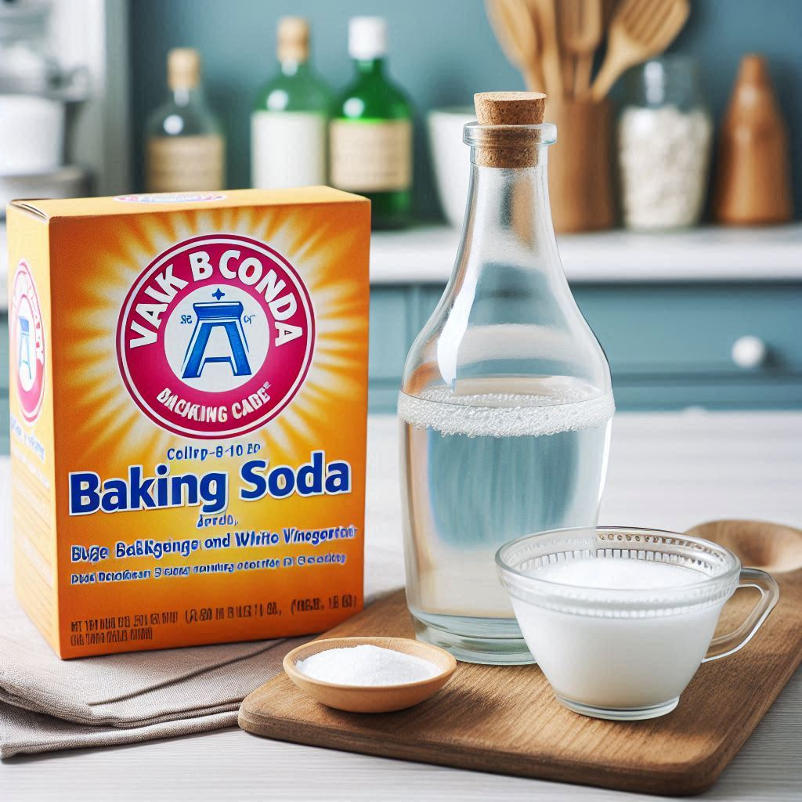
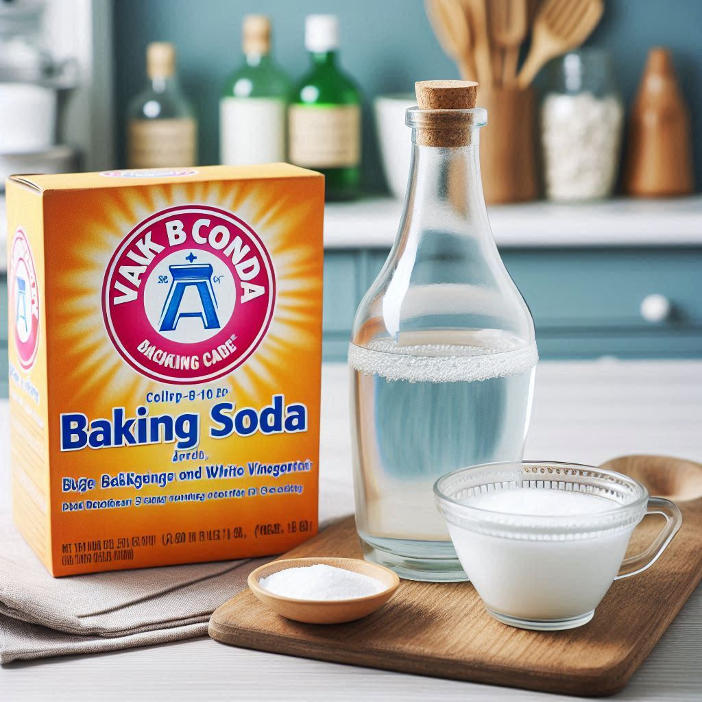
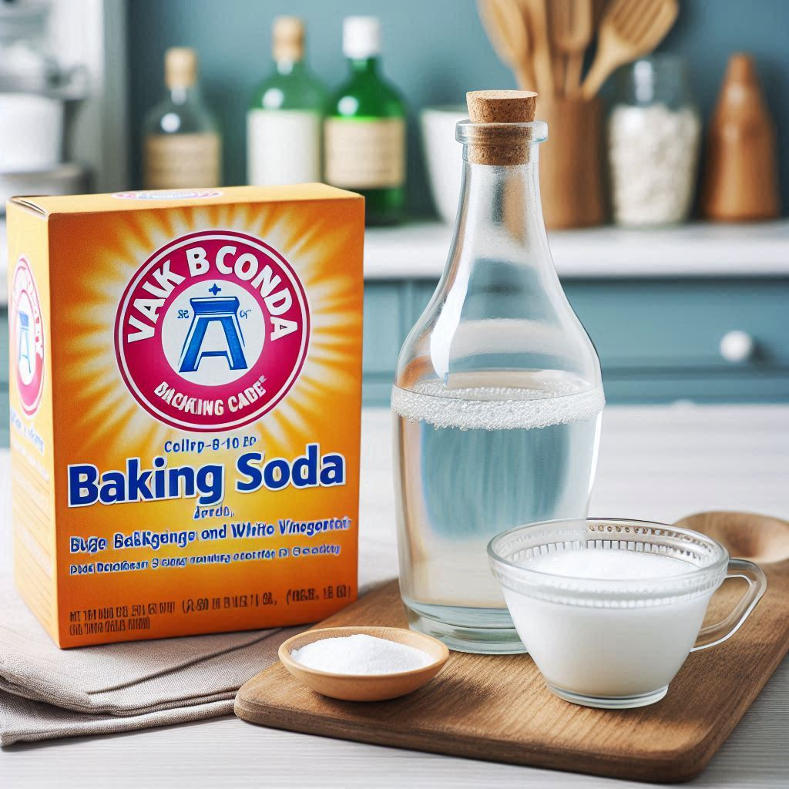
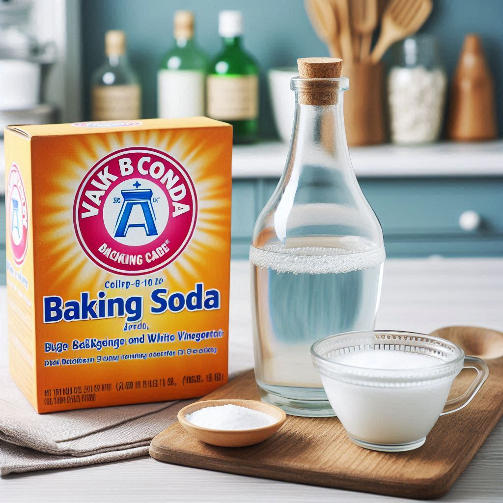
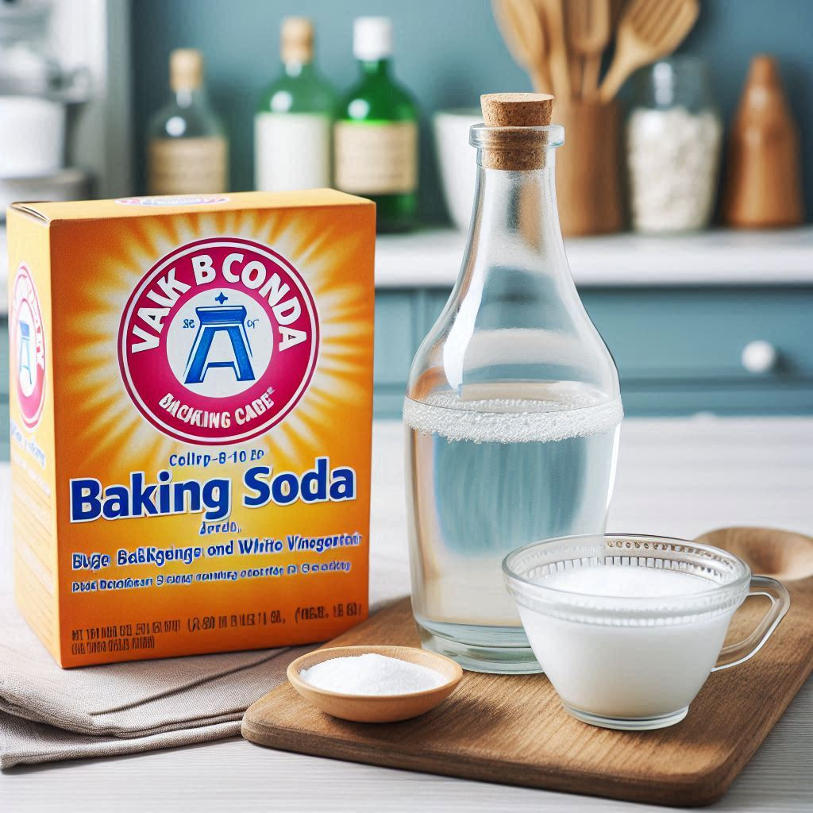

Odin Recipes
Recetas Odin
Agroecology Recipes
Recetas Agroecologicas

Medir pH del Suelo de forma casera
Medir pH del Suelo con tiras reactivas
Corregir el pH del suelo (en construcción)
Aplicación Tierra de Diatomeas a nuestras plantas
 


 
